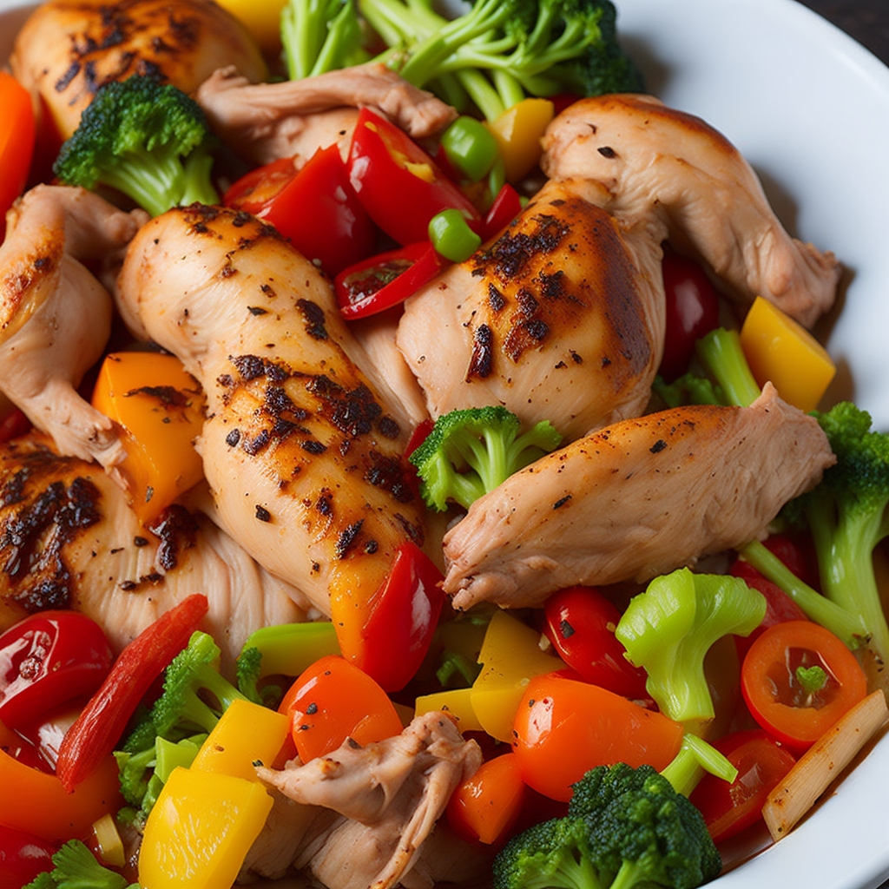

Mediterranes Hähnchen-Gemüse

| 500 g Hähnchen-Innenfilet |
| 250 g Cocktailtomaten |
| 250 g Feta |
| 200 g Zucchini |
| 2 EL Olivenöl |
| 2 TL Oregano, gerebelt |
| 1 TL Thymian, gerebelt |
| 40 g gehackter Basilikum |
| 4 Prise(n) Pfeffer |
Zubereitung
1. Schritt
Backofen auf 200°C (Ober- und Unterhitze) vorheizen.
2. Schritt
480g Hähnchen-Innenfilet, 250g Cocktailtomaten, 250g Feta, 200g Zucchini.
Die Zucchini vierteln und in Scheiben schneiden, die Cocktailtomaten halbieren und das Hähnchenfilet sowie den Feta in mundgerechte Würfel schneiden. Alles in eine große Schüssel geben.
3. Schritt
1 ⅓ EL Olivenöl, ¼ TL Salz, ¼ TL Oregano, gerebelt, ⅛ TL Thymian, gerebelt, ⅛ TL gehackter Basilikum, ⅛ TL Pfeffer.
Alles mit Olivenöl und den Gewürzen gut vermischen und anschließend auf einem mit Backpapier ausgelegten Backblech verteilen.
4. Schritt
Das Backblech in den Ofen schieben und etwa 20 Minuten im vorgeheizten Backofen garen.
Backofen auf 200°C (Ober- und Unterhitze) vorheizen.
2. Schritt
480g Hähnchen-Innenfilet, 250g Cocktailtomaten, 250g Feta, 200g Zucchini.
Die Zucchini vierteln und in Scheiben schneiden, die Cocktailtomaten halbieren und das Hähnchenfilet sowie den Feta in mundgerechte Würfel schneiden. Alles in eine große Schüssel geben.
3. Schritt
1 ⅓ EL Olivenöl, ¼ TL Salz, ¼ TL Oregano, gerebelt, ⅛ TL Thymian, gerebelt, ⅛ TL gehackter Basilikum, ⅛ TL Pfeffer.
Alles mit Olivenöl und den Gewürzen gut vermischen und anschließend auf einem mit Backpapier ausgelegten Backblech verteilen.
4. Schritt
Das Backblech in den Ofen schieben und etwa 20 Minuten im vorgeheizten Backofen garen.
Rezept erstellt von
Erdal